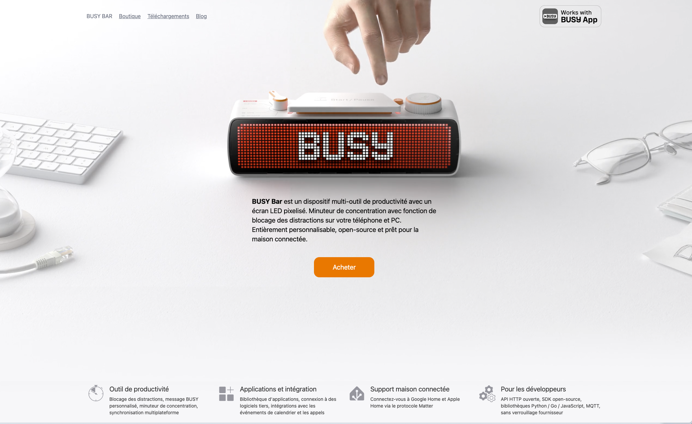
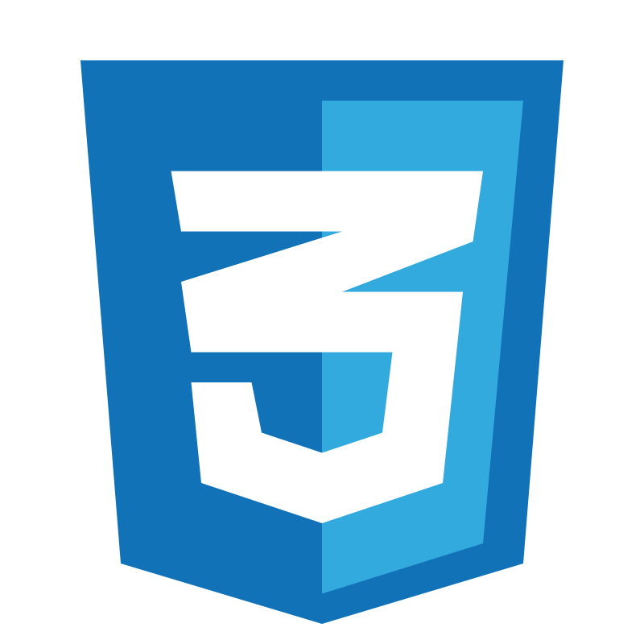
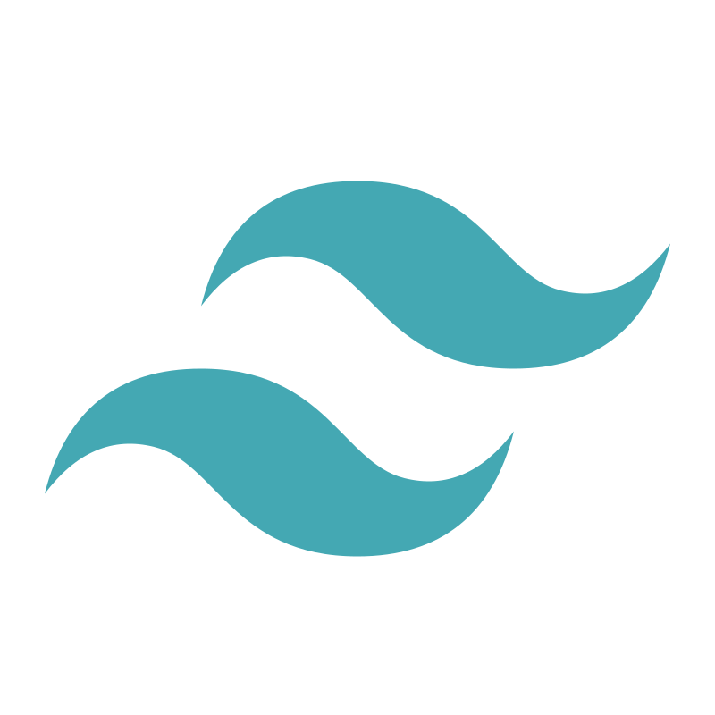

Projet de formation · Intégration front-end
Landing page BUSY Bar - Exo de formation
Réalisation d’une page d’accueil responsive pour présenter un produit, avec une vidéo en arrière-plan, une grille de fonctionnalités et une section associant texte et média.
-
HTML

-
CSS

-
Tailwind
